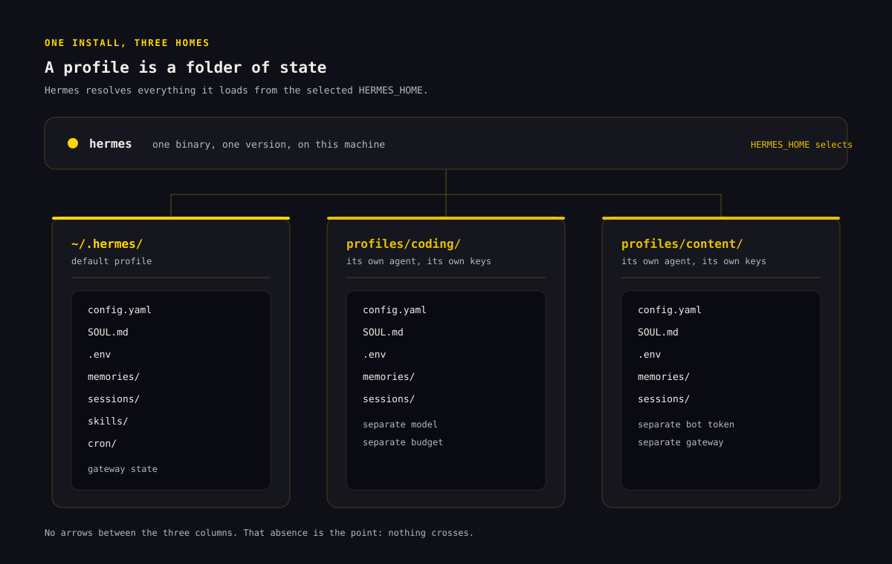
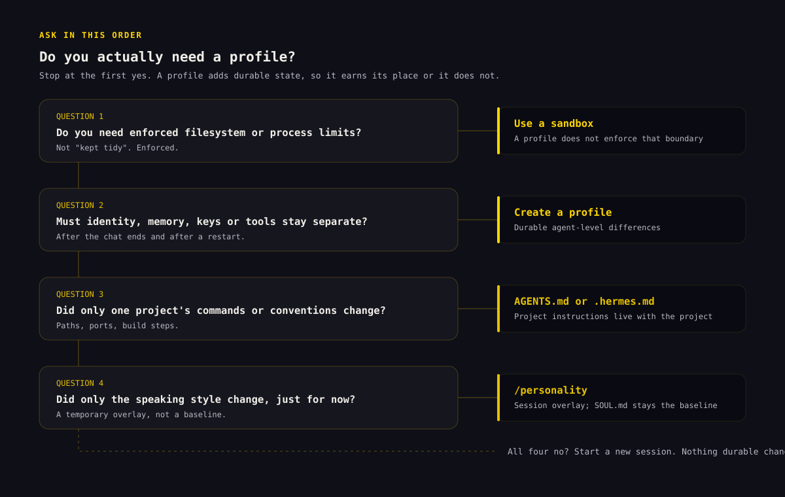
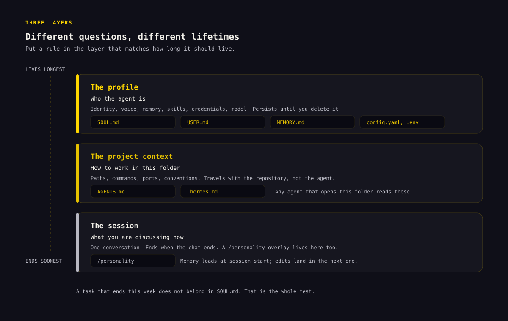
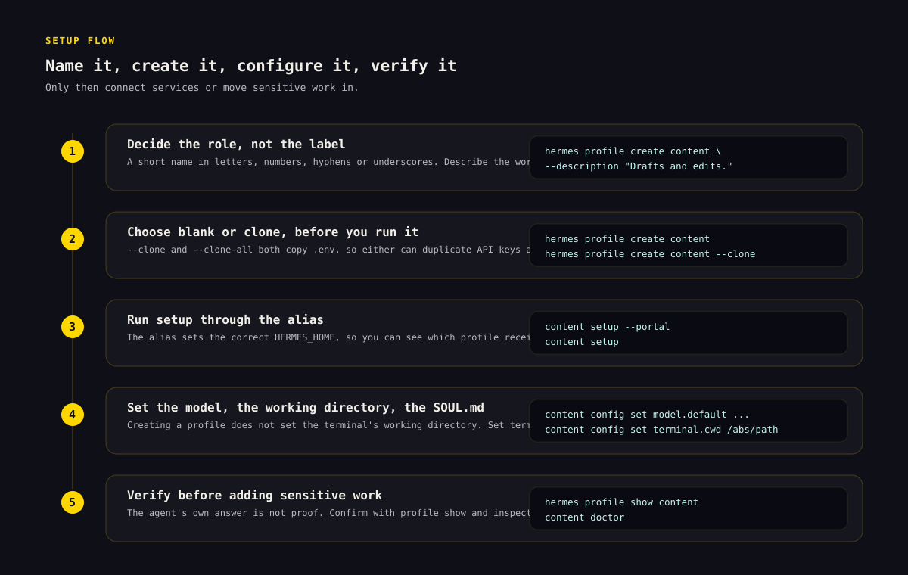
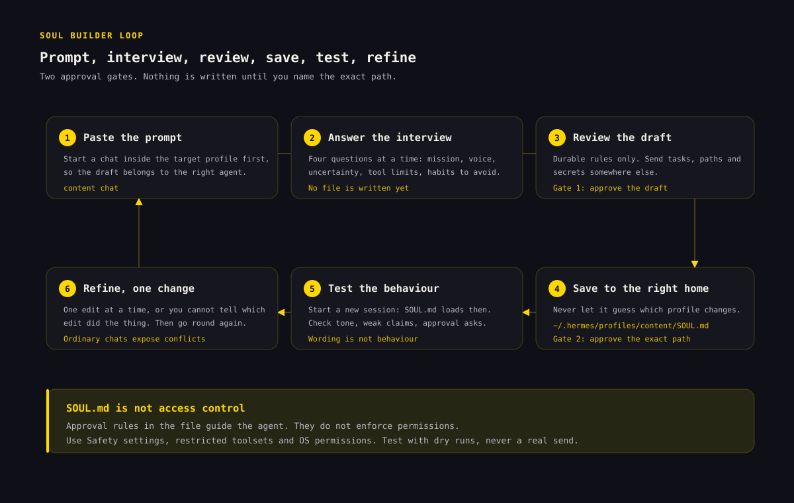

How to use Hermes Agent profiles without mixing agents
A Hermes profile keeps an agent’s data in its own HERMES_HOME: configuration, credentials, memory, sessions, skills, cron jobs, and gateway state. Create one when that data must stay separate across chats.[1]
The problem: two agents sharing one home directory overwrite each other’s memory, identity, and keys. A profile gives each agent its own folder of state — so one specialist can exist without touching the others.
├── content/ ← a second, isolated profile
└── research/ ← a third
What is a Hermes Agent profile?
A profile is a complete, separate HERMES_HOME. The default profile normally lives at ~/.hermes; named profiles normally live under ~/.hermes/profiles/<name>. Hermes resolves profile-scoped state from that home directory, so each profile can behave like a different agent on the same machine.[1]
A profile can have its own:
| Profile component | What it controls |
|---|---|
config.yaml | Model, provider, tools, terminal, memory, gateway, and other settings |
.env | API keys, bot tokens, and profile-specific environment values |
SOUL.md | Durable agent identity, voice, and behavioral defaults |
memories/ | Persistent user facts and agent notes |
sessions/ | Conversation history and resumable sessions |
skills/ | Procedures and specialist capabilities available to that profile |
cron/ | Scheduled jobs owned by that profile |
| Gateway state | Messaging connections, process state, logs, and related data |
Profiles namespace the Hermes state each agent loads automatically. They do not stop an agent or tool running as the same operating-system user from reading another profile’s files. Do not run two agent processes against the same profile: both can write memory and other profile state, so their changes can overwrite or mix.[1]

A profile is not a filesystem sandbox
Profiles separate the Hermes data that normally loads for an agent. They do not automatically restrict the folders that agent can access. On the normal local terminal backend, profiles also use the operating-system user’s regular home directory for external command-line tools unless you configure a different terminal home mode.[1]
- Use a profile to separate normal Hermes configuration, memory, and profile
.envloading. - Use
terminal.cwdto choose where terminal commands begin. - Use a proper sandbox or restricted terminal backend when you need enforced filesystem limits.
- For a confidentiality boundary, also use separate OS accounts, containers or sandboxes, restricted tools, and separately scoped external credentials.
terminal.home_mode: profile changes HOME only for tool subprocesses. You must initialize or deliberately link the profile’s SSH, Git, GitHub CLI, cloud CLI, npm, and similar state under $HERMES_HOME/home. It does not prevent access to paths outside that home or remove credentials inherited through the process environment.[1]
Profiles are state boundaries, not filesystem sandboxes. If you need enforced isolation, configure the terminal backend and access controls that enforce the boundary you need — a profile alone will not stop an agent from reading files elsewhere on the machine.
When to create a profile
Use a profile when identity, memory, credentials, or tools must remain separate after a chat or restart.
Common cases include:
- separating the Hermes data that work, personal, or client agents load by default;
- giving specialist or public-facing agents their own tools and credentials;
- testing new models, plugins, or prompts before adding them to a primary agent; and
- running messaging bots through separate gateways.[1][3]
Profiles can also use different models and budgets.

When a profile is unnecessary
Do not create a profile just to rename a chat. A profile adds durable state and configuration, which is useful only when that boundary matters.
| What changed? | Use this | Why |
|---|---|---|
| Only the conversation topic | New session | You want fresh conversational context, not a new agent |
| Only one project’s commands or conventions | AGENTS.md or .hermes.md | Project instructions belong with the project[6] |
| Only the temporary speaking style | /personality | A personality preset is a session-level overlay; SOUL.md is the durable baseline[8] |
| Identity, memory, model, skills, keys, or bot connection | Profile | These are durable agent-level differences |
| Enforced filesystem or process restrictions | Sandbox or restricted backend | A profile does not enforce that boundary[1] |
Profiles, projects, and sessions are different layers
A session is one conversation. A project context file tells Hermes how to work in a particular repository or folder. A profile defines the durable agent that enters those sessions and projects.

A useful shorthand:
SOUL.mdsays who the agent is.USER.mdsays who the user is.MEMORY.mdrecords what the agent has learned.AGENTS.mdor.hermes.mdsays what this project needs.- The current session contains what you are discussing now.[6]
Hermes loads memory when a session starts. Changes saved during that session persist to disk, but the system prompt does not receive the updated memory block until a new session begins.[6]
Create a profile
This guide assumes Hermes is installed and that either the hermes command or Hermes Desktop is working. Decide three things before creating the profile:
- A short name for the agent’s role.
- Whether it should begin blank or inherit an existing setup.
- Which credentials, project folder, tools, and external services it genuinely needs.
If you plan to clone an existing profile, review whether copying its .env is acceptable before running the command.
Choose how to create the profile
You can start with a blank profile, copy configuration only, or copy configuration plus memories, cron jobs, and plugins. Choose before you run setup because the clone options can copy credentials you may not want.
| Starting method | Command | What it does | Best use |
|---|---|---|---|
| Blank | hermes profile create content | Creates a fresh profile and seeds bundled skills | A genuinely new agent |
| Clone configuration | hermes profile create content --clone | Copies config.yaml, .env, SOUL.md, and skills; memory and sessions start fresh | Same technical setup, new identity or workstream |
| Clone everything practical | hermes profile create content --clone-all | Also copies memories, cron jobs, and plugins; excludes profile history such as sessions and the state database | A working snapshot that does not need old transcript history |
| Clone a named source | hermes profile create content --clone-from researcher | Copies from a chosen profile instead of the current one | Building a new specialist from a known base |
Both --clone and --clone-all copy .env, so either method may duplicate API keys and bot tokens. Review the new profile’s credentials before using it. --clone-all still excludes per-profile history; use export or backup when history must be preserved.[1][2]
Advanced users can add --no-skills to create a narrow profile without the bundled skill set. That option cannot be combined with a clone operation.[2]
Set up a profile from the CLI
- Choose a clear name and role. Use a short profile name made from letters, numbers, hyphens, or underscores. Describe the work rather than choosing a vague label.
hermes profile create content \ --description "Drafts, edits, and repurposes sourced marketing content."The description is stored in
profile.yamland is used by Hermes’s kanban orchestrator to route work by role rather than profile name. You can add or replace it later:[2]hermes profile describe content \ --text "Drafts, edits, and repurposes sourced marketing content." - Run setup for that profile. Every named profile normally gets a command alias. The alias sets the correct
HERMES_HOMEbefore running Hermes.[1]content setup --portalIf you do not use Nous Portal, run the normal setup flow:
content setup - Set profile-specific options. Use the alias so you can see which profile receives the change.
content config set model.default provider/model-name content config set terminal.cwd /absolute/path/to/content-workspace content skills listCreating a profile does not make the profile directory the terminal’s working directory. Set
terminal.cwdexplicitly when the agent should start in a particular project.[1][2] - Create the profile’s
SOUL.md. The next section provides a prompt that interviews you and drafts the file. Review the result before saving it. - Verify before adding sensitive work.
hermes profile list hermes profile show content content doctor content chathermes profile show contentreports the profile home, model, gateway status, skill count, and whether important configuration files exist. It reports the Hermes home, not the terminal working directory.[2]In the first chat, ask:
State your role, your durable operating boundaries, and the profile name you are running under. Do not infer details you cannot verify.The reply checks only what the agent says. Confirm the active profile with
hermes profile show, inspect its configuration, and test any tool restrictions directly.[2]
Create a profile in Hermes Desktop
In Bot Mode, open the Bots roster, create an agent, and enter its name, title, and description. Advanced settings control its model, SOUL.md, skills, toolsets, and MCP servers.[5]
With multiple profiles, each settings page shows an Applies to selector. Check it before making changes. Switching the active profile resets the selector.[5]
The CLI and Desktop use the same Hermes core and profile state. You can create or inspect a profile in one interface and continue in the other.[5]

Write a SOUL.md for a profile
SOUL.md defines the profile’s default identity and behavior. Hermes loads it from that profile’s HERMES_HOME when a session starts. Put long-lived voice, communication, and decision rules there; keep repository paths, ports, and commands in AGENTS.md.[7][8]
What belongs in the file?
Put in SOUL.md | Put somewhere else |
|---|---|
| Identity and role | A task that ends this week |
| Audience and working relationship | Repository paths and architecture |
| Tone and communication style | Commands, ports, and deployment notes |
| Default level of detail | A single campaign brief |
| How to handle uncertainty | User facts that belong in persistent memory |
| Approval gates for consequential actions | Secrets and API keys |
| Behaviors to avoid | Temporary style changes better handled by /personality |
Include only rules that should apply across many sessions and would change the agent’s behavior. Leave one-off tasks and project details elsewhere.[7]
Copy and paste this SOUL Builder prompt
SOUL.md is not access control. Approval rules in the file guide the agent but do not enforce permissions. Use Hermes Safety and approval controls, restricted toolsets, terminal backends, and operating-system permissions for consequential actions. Test with mock or dry-run actions, never a real publish, send, purchase, deletion, or production change.[7][8]
Start a chat inside the new profile first:
content chatThen paste this prompt:
Help me draft the SOUL.md for this Hermes profile.
Profile name: [PROFILE NAME]
Initial role: [ONE-SENTENCE ROLE]
Do not write or replace a file yet.
Ask no more than four questions at a time. Cover:
- the agent's mission, audience, and work that is in or out of scope
- its voice, directness, and normal answer length
- when it should ask a question, make an assumption, or flag uncertainty
- its tool and data boundaries, including actions that need approval
- phrases, habits, and failure modes it should avoid
If an answer belongs in AGENTS.md, a campaign brief, memory, credentials,
or a temporary /personality preset, identify it and leave it out of SOUL.md.
After the interview, summarize any unresolved decisions and draft a compact
SOUL.md. Show me the draft and wait for approval. After I approve it, state
the exact target path and ask again before writing the file.
Do not publish, send, post, share, delete, purchase, or change an external
system during this process.This creates two approval points: one for the draft and one for the target file.

Review the draft before saving it
- Does the first paragraph say who the agent is in plain language?
- Is the intended user or audience clear?
- Are the boundaries durable, or are temporary tasks mixed in?
- Does the file say how to handle uncertain or unsupported claims?
- Are approval gates explicit for publishing, sending, deleting, purchasing, or changing external systems?
- Are project-specific commands and paths kept out?
- Do any instructions contradict one another?
- Is the file short enough to read and edit without hunting for the important rules?
Example SOUL.md for a content profile
Use this as a model, not as a universal template:
# Identity
You are a focused content strategy and production assistant.
# Mission
Help the user research audiences, plan useful content, write grounded drafts,
and repurpose approved material without inventing proof or claims.
# Scope
You may research, outline, draft, edit, and prepare campaign assets. Keep drafts
editable and preserve links to the sources behind factual claims.
Do not publish, send, post, share, delete, purchase, or change an external
system without explicit human approval.
# Working style
Start with the answer or useful next step. Use plain language, short paragraphs,
and specific examples. Ask questions only when the missing answer would change
the work materially. Otherwise, state the assumption and proceed.
# Evidence and uncertainty
Do not invent statistics, testimonials, customer results, pricing, scarcity,
or product capabilities. Cite factual claims when a reader may want to check
them. Say what is uncertain and what still needs verification.
# Approval gates
The user is the final approval gate for public-facing content and external
actions. Present the draft, note unresolved claims or missing assets, and wait
for approval before publication or distribution.
# Avoid
Avoid hype, vague authority claims, padded introductions, fake urgency, and
confident language unsupported by evidence.Save the approved file to the correct profile
For a named profile called content, the usual Linux, macOS, or WSL path is:
~/.hermes/profiles/content/SOUL.mdFor the default profile, the usual Linux, macOS, or WSL path is:
~/.hermes/SOUL.mdYou can edit the named profile file directly with any text editor. For example, on macOS or Linux:
nano ~/.hermes/profiles/content/SOUL.mdOn native Windows, the named profile file is normally %LOCALAPPDATA%\hermes\profiles\content\SOUL.md. Use Hermes Desktop, PowerShell, or a normal text editor. The ~ symbol in the other examples means your user home directory.[9]
If the active Hermes session has file-writing tools, you can approve it to write the file after it states the exact path. Do not let it guess which profile should be changed.
Start a new session after saving. Hermes loads SOUL.md at session start, and an active /personality overlay can still change how the current session sounds.[7][8]
Test the behavior, not just the wording
Run three or four small tests:
- Ask for a normal answer and check tone and length.
- Give the agent a weak claim and see whether it flags the lack of evidence.
- Ask for a simulated external action with no real target and confirm that it requests approval. Verify actual enforcement separately in Safety and tool settings.
- Give it a project-specific rule and check that it suggests the project context file rather than bloating
SOUL.md.
Test one change at a time. A few ordinary chats will expose vague or conflicting instructions.[7]
Switch profiles without changing the wrong agent
Hermes gives you three targeting methods.
Use the generated command alias
content chat
content doctor
content skills list
content config set terminal.cwd /absolute/path/to/content-workspaceOn POSIX host installs, the alias is a wrapper for hermes -p content and normally lives at ~/.local/bin/content.[1]
Use the explicit profile flag
hermes -p content chat
hermes --profile=content doctor
hermes chat -p content -q "Draft an outline"Use the explicit -p form in scripts and automation. It does not depend on whichever sticky default a person selected earlier.
Change the sticky default
hermes profile use content
hermes chat
hermes profile use defaultAfter hermes profile use content, plain hermes commands target that profile until you switch again.[1][2]
If content is not found, make sure ~/.local/bin is on PATH and open a new shell. hermes profile alias content recreates the wrapper but does not repair PATH; hermes -p content … works without the alias.
hermes profile alias contentRun multiple profile gateways
Run one gateway process per profile unless you have many low-traffic profiles.[3] Each process has its own bot token and can be restarted without interrupting the others.
Configure a unique bot token for each profile on each messaging platform. If two profiles use the same supported-platform token, Hermes blocks the second gateway and identifies the conflicting profile.[1]
content gateway install
content gateway start
research gateway install
research gateway startHermes can also let the default profile’s gateway serve every profile. Before enabling gateway.multiplex_profiles, stop any secondary profile gateways. Do not run separate secondary gateways while the multiplexer is serving them.[3]
Target the default profile explicitly when enabling it:
hermes -p default config set gateway.multiplex_profiles true
hermes -p default gateway restartMultiplexing uses fewer processes, but one restart affects every profile it serves. Separate gateways are simpler for most small installations.[3]
Back up, move, share, or delete a profile
Export a portable snapshot.
hermes profile export content
hermes profile export content -o ./content-profile.tar.gzProfile export creates a compressed archive. .env and auth.json are excluded, but an export is not privacy-sanitized: it can still contain memories, session transcripts, skills, and other sensitive content. Inspect the archive before sharing it.[2][4]
Import as a new profile.
hermes profile import ./content-profile.tar.gz
hermes profile import ./content-profile.tar.gz --name content-restoredImport refuses to overwrite an existing profile and cannot import an archive as the built-in default profile.[2]
The archive does not contain credentials. Configure them locally after import:
hermes -p content-restored setupUse a distribution for a maintained agent package. A profile distribution is a Git repository containing a shareable agent definition such as SOUL.md, config, skills, cron jobs, and MCP connections. Recipients install and update the package while keeping their own memories, sessions, credentials, and .env values.[4]
Use export/import for a snapshot or machine move. Use a distribution when a team or community should receive versioned updates.[4]
Delete only after exporting anything you need.
hermes profile delete contentDeletion removes the named profile’s config, memory, sessions, skills, alias, and related data. It is permanent. The default profile cannot be deleted with this command.[2]
Avoid --yes unless the script has verified the profile name and confirmed a backup.
Common profile mistakes and how to fix them
“I edited the wrong agent” — Run hermes profile list and hermes profile show content, then check the Desktop Applies to selector or use an explicit alias or -p flag before changing settings.[2][5]
“The profile starts in the wrong folder” — A profile home and terminal working directory are separate. Set an absolute starting directory:[1]
content config set terminal.cwd /absolute/path/to/project“I changed SOUL.md, but the agent sounds the same” — Confirm that you edited the SOUL.md under the selected profile’s HERMES_HOME, that the file is not empty, and that you started a new session. Also check whether /personality is applying a temporary overlay.[7][8]
“The cloned profile can access the same keys” — --clone copies .env. Replace or remove copied credentials before using the new profile.[1][2]
“Two agents are changing each other’s memory” — Stop both and confirm that they are not pointed at the same HERMES_HOME. Every running agent should have its own profile.[1]
“I created a profile for security, but it can still see my files” — Profiles are state boundaries, not filesystem sandboxes. Configure the terminal backend and access controls that enforce the boundary you need.[1]
Hermes profile command cheat sheet
| Goal | Command |
|---|---|
| List profiles | hermes profile list |
| Create a blank profile | hermes profile create <name> |
| Create with a role description | hermes profile create <name> --description "<role>" |
Clone config, .env, SOUL.md, and skills | hermes profile create <name> --clone |
| Clone from a named profile | hermes profile create <name> --clone-from <source> |
| Show profile details | hermes profile show <name> |
| Set or read a description | hermes profile describe <name> |
| Set the sticky default | hermes profile use <name> |
| Target one command explicitly | hermes -p <name> <command> |
| Regenerate an alias | hermes profile alias <name> |
| Rename a named profile | hermes profile rename <old> <new> |
| Export a snapshot | hermes profile export <name> |
| Import a snapshot | hermes profile import <archive> |
| Delete a named profile | hermes profile delete <name> |
The full command reference also covers distributions, update metadata, alias options, and non-interactive flags.[2]
Frequently asked questions
Where are Hermes profiles stored?
On Linux, macOS, and WSL, the default profile normally uses ~/.hermes and named profiles use ~/.hermes/profiles/<name>. Native Windows normally uses %LOCALAPPDATA%\hermes. Hermes sets HERMES_HOME to the selected profile’s directory.[1][9]
Does cloning copy memory and session history?
--clone copies config, .env, SOUL.md, and skills while starting with fresh memory and sessions. --clone-all also copies .env, memories, cron jobs, and plugins, but it still excludes per-profile history such as sessions and the state database.[1][2]
Can profiles use different models and API keys?
Yes. Each profile has its own config.yaml and .env, so models, provider configuration, API keys, and bot tokens can differ.[1]
Can several profiles run at the same time?
Yes, as long as each running agent has its own profile. Gateways can run as separate per-profile processes, or an advanced default-profile gateway can multiplex several profiles.[1][3]
Should each messaging bot have its own profile?
Usually, yes, when the bots should have different tokens, memories, tools, users, or risk. A dedicated profile makes those differences visible and durable.[1][3]
Is a profile the same as a project workspace?
No. The profile stores Hermes state. terminal.cwd controls where terminal commands start, and project files such as AGENTS.md hold project instructions.[1][6]
How do I get Hermes to write a specific SOUL.md?
Start a chat inside the intended profile, paste the SOUL Builder prompt from this guide, answer the short interview, review the result, and approve the exact file path before anything is written. Start a new session after saving so Hermes loads the new identity.[7][8]
What should I do next?
Create one profile for a role that clearly needs different identity, memory, skills, or credentials. Keep the first version small. Verify the profile, draft its SOUL.md, run a few behavior tests, and only then connect external services or move sensitive work into it.